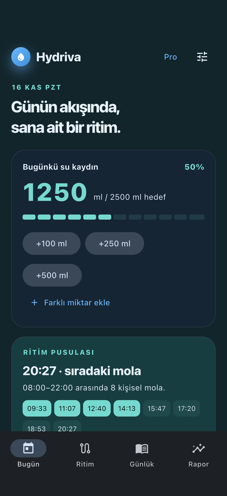
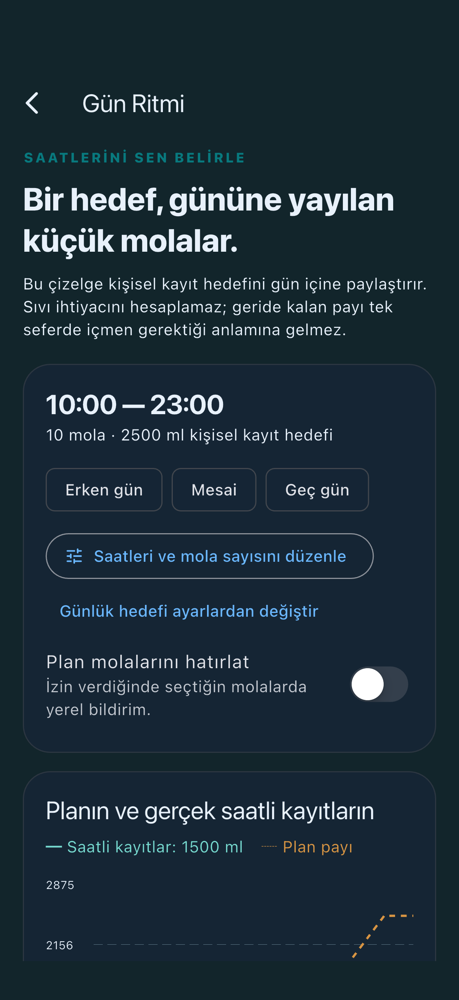
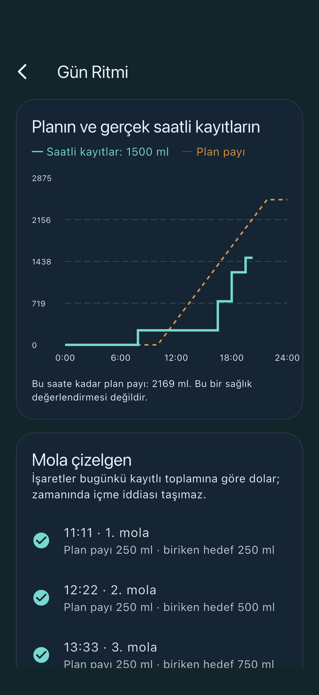
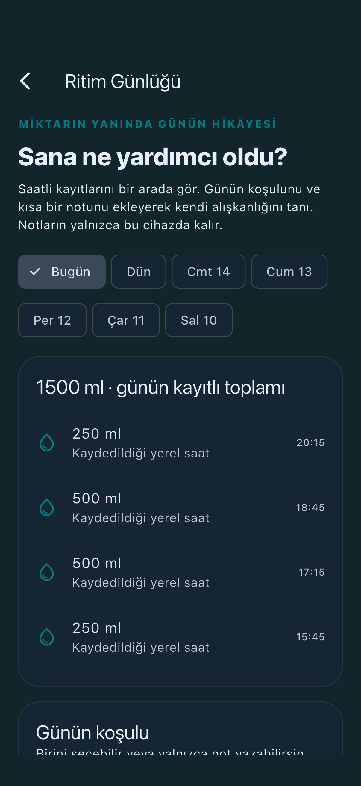
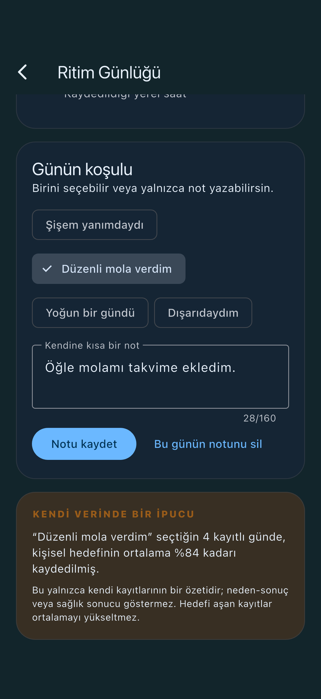

Günün akışında,
sana ait bir ritim.
Bir sayıdan fazlasını kaydet: su molalarının saatini, günün koşulunu ve kendine kısa bir notu. Hydriva bu kayıtları kişisel bir plan ve günlükte bir araya getirir.
Görseller tanıtım için hazırlanmış örnek kayıtları gösterir. Uygulama ilk açılışta boş başlar; bu veriler hesabına eklenmez.Kaydet ve günün içinde yerini gör
Ana ekranda günlük toplamını, kişisel kayıt hedefini ve sıradaki mola saatini gör. 100, 250 veya 500 ml ekle; farklı bir miktar seç. Yeni kayıt, miktarla birlikte o andaki yerel saati de saklar.
Yanlış eklemeyi üç saniye içinde Geri al ile kaldırabilirsin. Toplam ve saatli kayıt birlikte geri alınır.

Saatlerini ve molalarını kendin seç
Alt menüden Ritim'i aç. Erken gün, Mesai veya Geç gün ile başlayabilir; Saatleri ve mola sayısını düzenle ile aynı gün içinde en az iki saatlik bir aralık ve 4–12 mola seçebilirsin.
Bu plan, kendi belirlediğin günlük kayıt hedefini gün içine paylaştırır. Sıvı ihtiyacını veya içmen gereken tıbbi miktarı hesaplamaz. Gece yarısını aşan planlar desteklenmez.

Plan ve gerçek kayıtlar, aynı grafikte
Turkuaz çizgi saatli su kayıtlarını, kesikli turuncu çizgi plan payını gösterir. Grafiğin altındaki mola listesinde saatleri ve biriken plan payını metin olarak da okuyabilirsin.
Eski toplamların korunur. Saat bilgisi olmayan eski kayıtlar, saatli grafiğe uydurma bir saatte yerleştirilmez. İşaretler zamanında içme veya sağlık puanı değildir.

Günün koşulunu da hatırla
Alt menüden Günlük'ü aç. Son yedi günden birini seç; o güne ait saatli kayıtlarını gör, bir gün koşulu ve kısa bir not ekle. Notunu daha sonra değiştirebilir veya silebilirsin.
Su kayıtları, planın ve notların cihazında kalır. Hesap açman gerekmez.

Tekrarları fark et
Aynı koşulu seçtiğin en az iki günde hem su toplamı hem kişisel hedef biliniyorsa, o günlerde hedefinin ortalama ne kadarının kaydedildiğini görürsün. Hedefi aşan kayıtlar bu ortalamayı yükseltmez.
Bu, yalnızca kayıtlarının betimsel bir özetidir. Koşulun su tüketimine neden olduğunu veya bir sağlık sonucu yarattığını göstermez.

Seçtiğin saatlerde, cihazından
Ritim ekranından Plan molalarını hatırlat seçeneğini açıp iOS bildirim iznini ver. Önümüzdeki beş günlük molalar cihazda planlanır; uygulamaya döndüğünde, planını veya hedefini değiştirdiğinde yenilenir.
Plan saatlerinin dışında bildirim yapılmaz. Günlük kayıt hedefin tamamlandığında bugünün kalan molaları sessize alınır; sonraki günlerin molaları korunur. Plan bir hatırlatma düzenidir; atlanan miktarı tek seferde telafi etmeye çalışma.
Temel özellikler ücretsiz
Gün Ritmi, saatli kayıtlar, günlük notları, temel raporlar ve betimsel ipuçları ücretsizdir. Pro gelişmiş haftalık ve aylık analizleri açar.
Aylık 399 TL · yıllık 3.999 TL. Uygun yeni abonelere üç gün ücretsiz deneme. Kesin fiyat ve uygunluk Apple onay ekranında gösterilir.